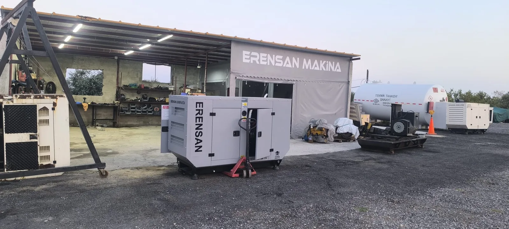
Satın Alma Rehberi
Jeneratör Fiyatları Neye Göre Değişir?
Kapasite, kabin, transfer panosu, kurulum ve servis dahil satılık jeneratör tekliflerini doğru kapsamla karşılaştırın.
Yazıyı okuyun →Doğru jeneratörü seçmek, kiralama maliyetini planlamak ve cihazı ihtiyaç anına hazır tutmak için sahada işe yarayan bilgileri sade bir dille paylaşıyoruz.
Her yazı belirli bir soruyu yanıtlar; teknik terimleri gereksiz yere çoğaltmadan karar vermenizi kolaylaştırır.

Kapasite, kabin, transfer panosu, kurulum ve servis dahil satılık jeneratör tekliflerini doğru kapsamla karşılaştırın.
Yazıyı okuyun →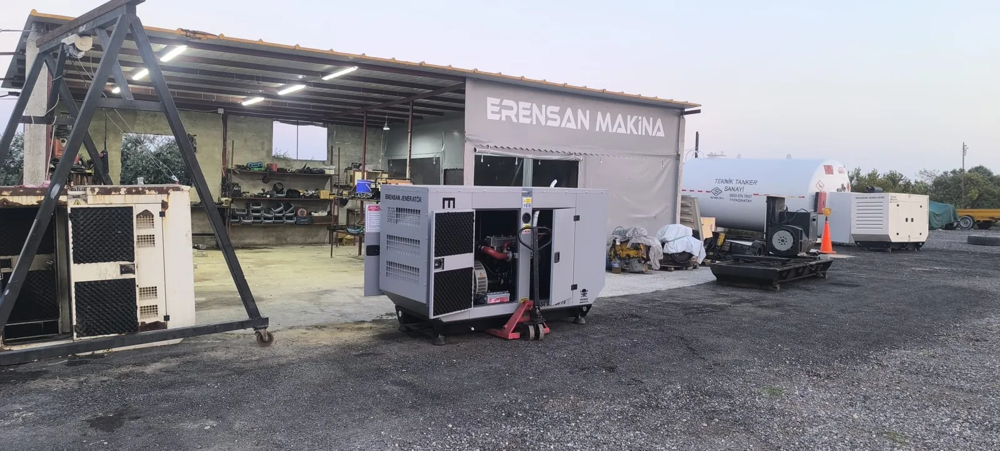
Çalışma geçmişi, motor, alternatör, yük testi, belgeler ve toplam kurulum maliyetini satın almadan önce doğrulayın.
Yazıyı okuyun →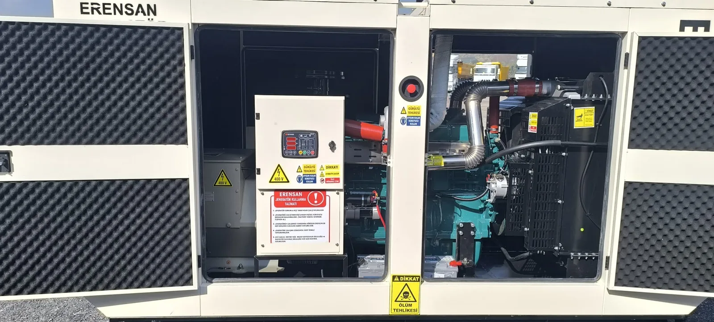
CNC, kompresör, kaynak makinesi, motor ve sürücülü yükler için doğru kapasiteyi ve çalışma sırasını planlayın.
Yazıyı okuyun →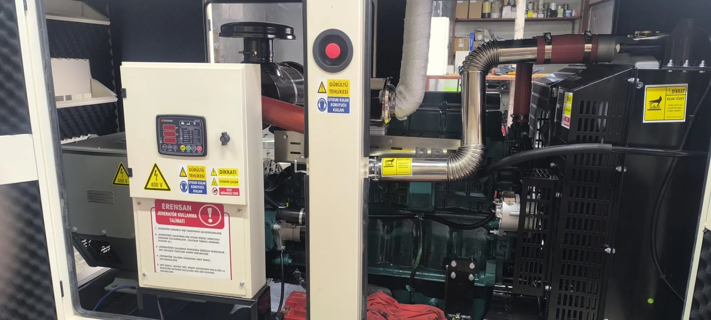
Gerçek güç, görünür güç ve güç faktörünü örnek hesaplarla anlayın; jeneratör seçiminde basit dönüşümün neden yetmediğini görün.
Yazıyı okuyun →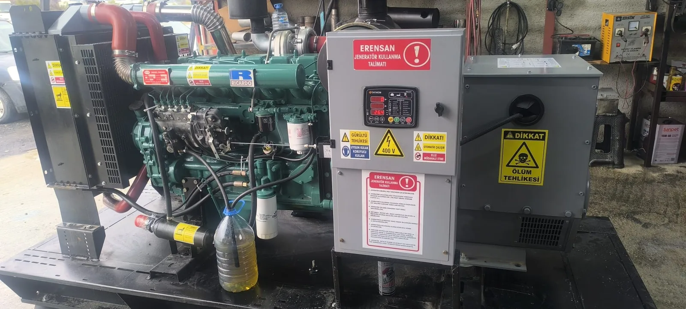
Firmaları güç keşfi, teklif kapsamı, kurulum, devreye alma, bakım ve teknik servis ölçütleriyle karşılaştırın.
Yazıyı okuyun →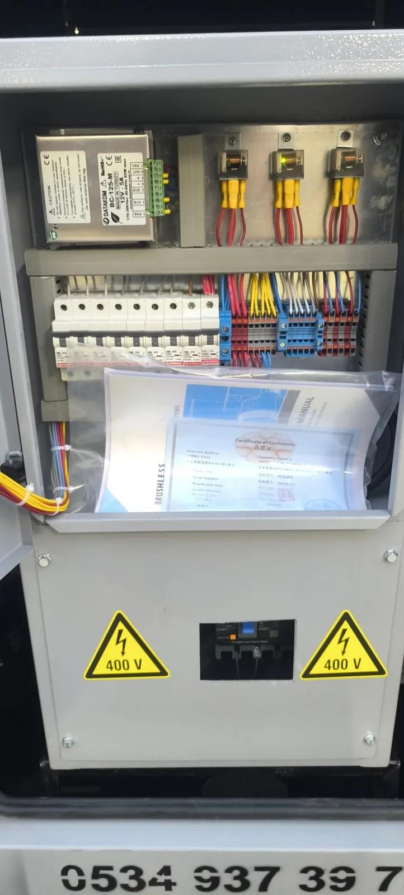
Paneli açmadan ve elektrik sistemine dokunmadan kontrol edilebilecek durumlar ile servise aktarılacak bilgiler.
Yazıyı okuyun →Kullanım süresi, kapasite, toplam maliyet, bakım ve teknik desteğe göre doğru seçeneği belirleyin.
Yazıyı okuyun →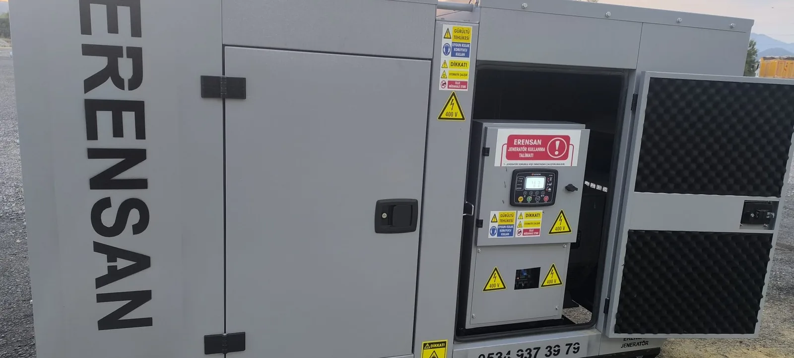
Kapasite, süre, nakliye, kablo, yakıt ve servis dahil kiralama teklifini oluşturan bütün kalemler.
Yazıyı okuyun →Kritik yük, motor kalkışı, eş zamanlılık ve ortam koşullarıyla doğru kapasiteyi belirleme rehberi.
Yazıyı okuyun →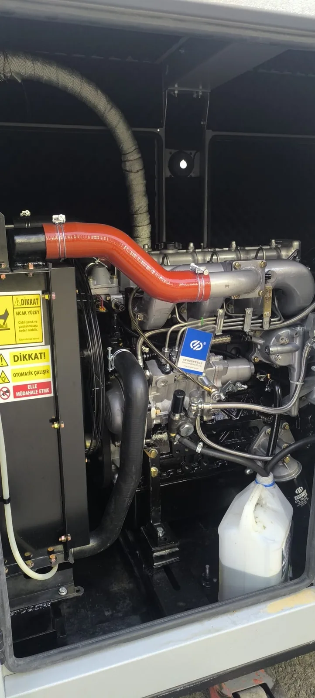
Hava akışı, radyatör, soğutma sıvısı ve aşırı yük kaynaklı hararet sorunlarını güvenli biçimde değerlendirin.
Yazıyı okuyun →Kapasite, süre, saha erişimi, yakıt ve teknik destek dahil doğru kiralama kararının temel adımları.
Yazıyı okuyun →Çalışma saati, geçen süre ve Mersin'in sıcak-nemli koşullarına göre bakım planı nasıl belirlenir?
Yazıyı okuyun →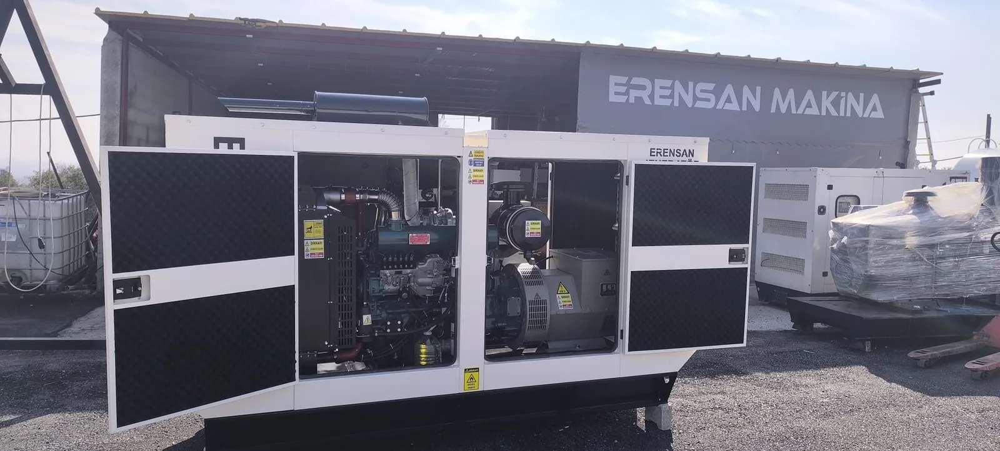
kVA hesabından otomatik transfer sistemine, ses seviyesinden servis planına kadar doğru cihaz seçimi.
Yazıyı okuyun →Blogdaki teknik bilgileri, Mersin'deki atölyemizde bulunan jeneratörlerin kumanda, motor, kabin ve bakım noktalarından gerçek fotoğraflarla destekliyoruz.
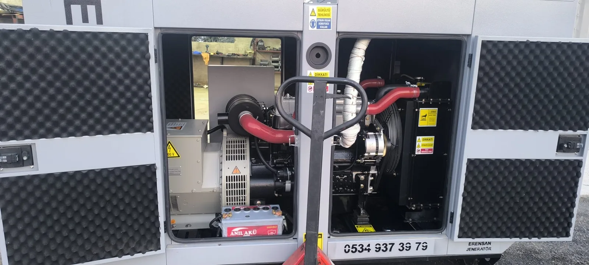
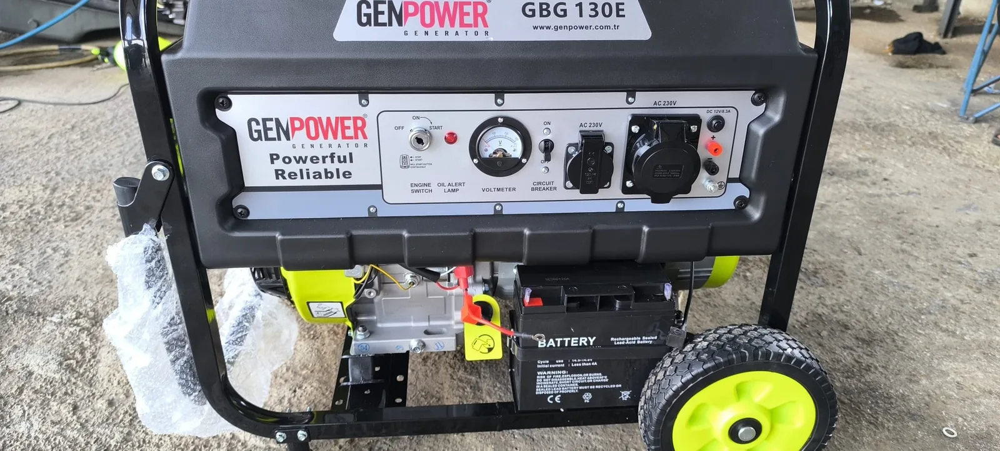
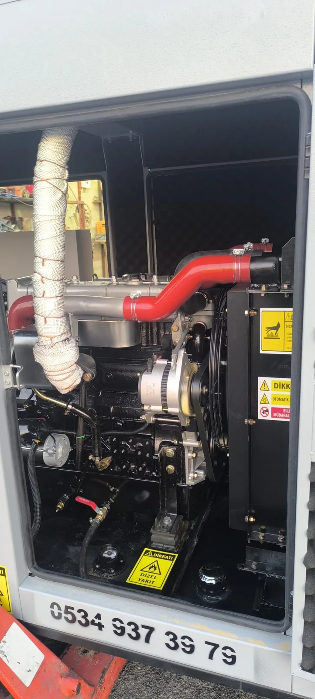
Mersin'de yaz sıcakları, nem, tarımsal sulama, liman ve sanayi faaliyetleri jeneratör ihtiyacını doğrudan etkiler. Bu nedenle genel bilgiyle yetinmeyip yerel saha koşullarını, ilçelerdeki kullanım senaryolarını ve sık karşılaşılan soruları ele alıyoruz.